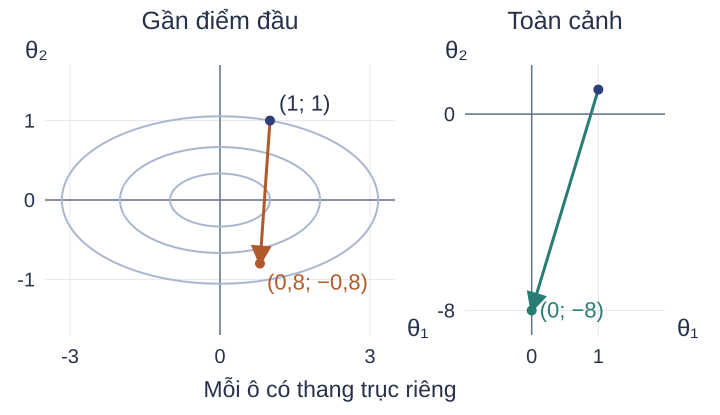
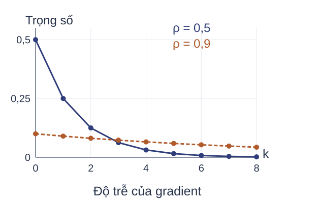
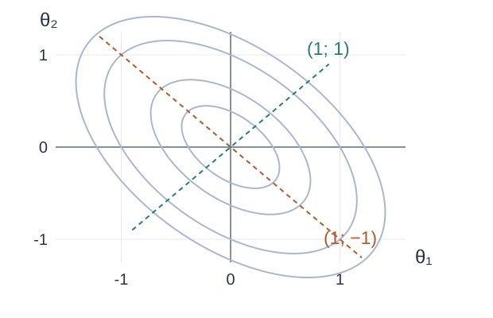
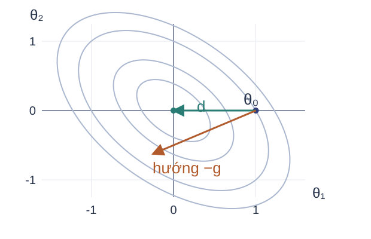
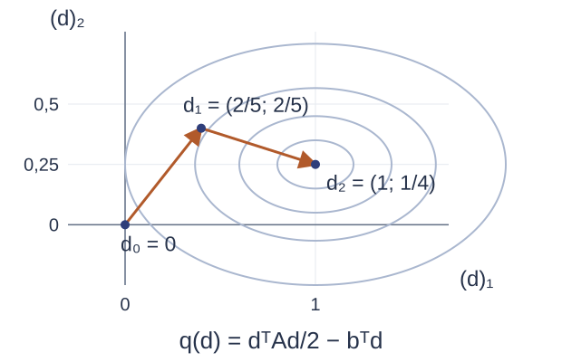
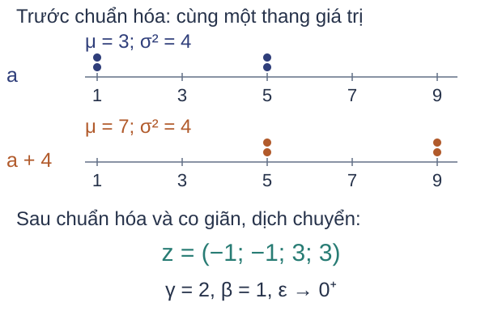
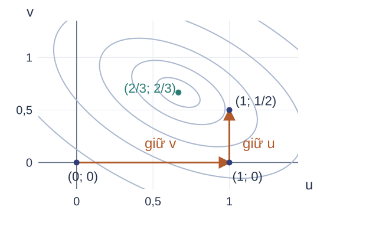
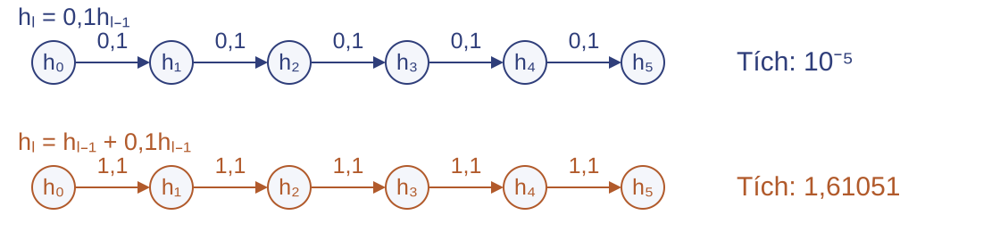
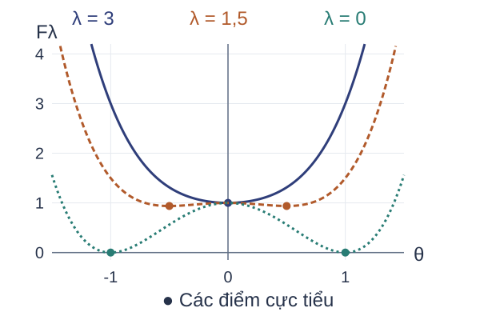

Các phương pháp tối ưu trong học sâu Cơ sở toán học cho AI · Bài 06
Thống kê gradient · Thông tin độ cong · Tổ chức huấn luyện
Viện Trí tuệ nhân tạo
Bài học tiếp nhận gradient, giảm theo gradient ngẫu nhiên, momentum, Nesterov và khởi tạo đã học. Phạm vi gồm cách điều chỉnh bước cập nhật bằng thống kê gradient hoặc độ cong, cùng các can thiệp vào mô hình và quá trình huấn luyện. Mọi lựa chọn cần được xét theo dữ kiện, điều kiện áp dụng, chi phí và mục tiêu đích.
Nguồn: Đề cương UET.AI2012, Buổi 6; Goodfellow, Bengio và Courville (2016), Deep Learning , §§8.5–8.7.
Nội dung và mục tiêu học tập Dữ liệu và mô hình
→ Mục tiêu cùng điểm đầu
→ Quy tắc cập nhật và quỹ đạo
→ Quy tắc trả về và đầu ra
Tính và phân biệt bước AdaGrad, RMSProp, Adam. Giải hoặc xấp xỉ hệ Newton; kiểm điều kiện của gradient liên hợp và BFGS. Vận dụng sáu chiến lược tổ chức huấn luyện; xác định thành phần bị thay và giới hạn. Bài toán: lựa chọn thành phần cần điều chỉnh khi một tốc độ học vô hướng chưa xử lý đủ thang đo, độ cong hoặc giới hạn mô hình và dữ liệu.
Ba mục tiêu lần lượt tương ứng chuẩn đầu ra bài học 14, 15, 16 và chuẩn đầu ra học phần 2–4. Tiên quyết gồm gradient, Hessian, ma trận xác định dương, giảm theo gradient ngẫu nhiên (SGD), momentum và Nesterov. Gradient liên hợp và BFGS được phát triển trong bài.
Sơ đồ xác lập cơ sở chung: dữ liệu và mô hình sinh mục tiêu; điểm đầu và quy tắc cập nhật sinh quỹ đạo; quy tắc trả về chọn đầu ra. Các phương pháp thống kê và độ cong điều chỉnh bước trên quỹ đạo. Sáu chiến lược gồm chuẩn hóa theo lô, hạ theo khối, trung bình Polyak, tiền huấn luyện, tiếp diễn và học theo chương trình; thiết kế kiến trúc bổ sung cách xét đường truyền gradient.
Nguồn: Đề cương UET.AI2012, LLO14–16; Goodfellow, Bengio và Courville (2016), Deep Learning , §§8.5–8.7.
Sai lệch thang đo trong bước cập nhật $F(\theta)=\frac12(\theta_1^2+9\theta_2^2)$, $\theta=(1,1)^\top$, $g=(1,9)^\top$.

$$\theta^+=\theta-\eta g$$
Một bước vô hướng chịu chi phối bởi hướng có độ cong lớn.
Gradient là $\nabla F(\theta)=(\theta_1,9\theta_2)^\top$. Tại $(1,1)$, độ dời bằng $(-\eta,-9\eta)$. Giá trị sau bước $\eta=0{,}2$ là $(0{,}64+9\cdot0{,}64)/2=3{,}2$; sau bước $\eta=1$ là $9\cdot64/2=288$. Hình gồm ô gần gốc và ô toàn cảnh, với các tỷ lệ trục được ghi riêng. Độ cong theo hai tọa độ khác nhau tạo nhu cầu phạt bước bằng ma trận thay cho một hệ số chung.
Các số này thuộc hàm bậc hai xác định dương và gradient đầy đủ; chúng không chứng minh sự giảm của gradient lô nhỏ trên mạng phi lồi.
Nguồn: Ví dụ và hình tự xây dựng; Goodfellow, Bengio và Courville (2016), Deep Learning , §8.2.1; Stanford CS231n (2017), Lecture 7, tr.15–17.
Mô hình cục bộ của bước cập nhật $\mathcal D=\{(x_i,y_i)\}_{i=1}^n$, $\theta\in\mathbb R^p$, $F(\theta)=\frac1n\sum_i\ell(f_\theta(x_i),y_i)$.
Vòng $t\ge1$: tính gradient lô $g_t$ tại $\theta_{t-1}$. Với $M_t\succ0$, $\eta_t>0$:
$$\min_{d\in\mathbb R^p}\left\{g_t^\top d+\frac{1}{2\eta_t}d^\top M_td\right\}$$
$$d_t=-\eta_tM_t^{-1}g_t,\qquad\theta_t=\theta_{t-1}+d_t$$
Ví dụ: $g=(1,9)^\top$, $M=\operatorname{diag}(1,9)$, $\eta=1$ cho $d=(-1,-1)^\top$.
Ma trận đối xứng xác định dương (SPD) thỏa $M=M^\top$ và $z^\top Mz>0$ với mọi $z\ne0$. Đạo hàm mục tiêu theo $d$ là $g_t+M_td/\eta_t$. Hessian $M_t/\eta_t\succ0$ cho nghiệm cực tiểu duy nhất. $M_t$ định nghĩa mức phạt của độ dời; nó chưa nhất thiết là Hessian của $F$.
Khi dùng toàn bộ dữ liệu, $g_t=\nabla F(\theta_{t-1})$. Khi ấy $g_t\ne0$ kéo theo $g_t^\top d_t\lt 0$, nhưng một bước hữu hạn vẫn cần kiểm độ dài. Với gradient lô, dấu này chỉ mô tả mô hình lô. Các phương pháp thích ứng sẽ dựng $M_t$ đường chéo từ lịch sử gradient. Adam còn thay gradient ở tử bằng moment; các can thiệp vào mô hình và dữ liệu có phạm vi khác mô hình bước này.
Nguồn: Tự suy ra; Boyd và Vandenberghe (2004), §9.4.1, tr.476–477; Goodfellow, Bengio và Courville (2016), Deep Learning , §8.5.
Kiểm tra mô hình bước cập nhật Câu hỏi: Cho $g=(2,8)^\top$, $\eta=1/2$, xét
$$\min_{d\in\mathbb R^2}\left\{g^\top d+\frac{1}{2\eta}d^\top Md\right\}.$$
Giải thích kết luận cuối bằng dạng toàn phương.
Với $M=I$, $d=-g/2=(-1,-4)^\top$. Với $M=\operatorname{diag}(1,4)$, $M^{-1}g=(2,2)^\top$ nên $d=(-1,-1)^\top$. Với ma trận cuối, chọn $d=(0,t)^\top$ cho mục tiêu $8t-4t^2\to-\infty$ khi $|t|\to\infty$; bài toán không có cực tiểu. Phép giải phương trình dừng khi $M$ khả nghịch không thay được kiểm tính xác định dương.
Kết quả cho thấy ma trận phạt có thể sửa thang bước khi đã biết thang thích hợp. Trong huấn luyện, lịch sử gradient cung cấp một cách ước lượng thang này với bộ nhớ tuyến tính theo số tham số.
Nguồn: Bài tập tự xây dựng từ mô hình bước có phạt.
Thống kê gradient theo tọa độ Lịch sử gradient cung cấp thang đo mà không cần lưu Hessian.
Tọa độ 1: xuất hiện cả hai vòng; thống kê tăng từ $4$ lên $8$.
Tọa độ 2: chỉ xuất hiện ở vòng đầu; thống kê giữ giá trị $1$.
Bình phương giữ độ lớn đóng góp khi gradient đổi dấu.
Dấu $\odot$ là tích theo từng tọa độ. Nếu cộng trực tiếp gradient trái dấu, các đóng góp có thể triệt tiêu; tổng bình phương ghi lại độ lớn tích lũy. Dãy $(2,1)^\top,(2,0)^\top$ là đầu vào minh họa, không được khẳng định là gradient của hàm bậc hai trước trên một quỹ đạo cụ thể.
Tổng bình phương phụ thuộc các điểm và lô đã đi qua. Nó là thống kê gradient, không phải Hessian. Dùng căn của thống kê làm đường chéo ma trận phạt cho phép chia gradient theo từng tọa độ trong AdaGrad.
Nguồn: Goodfellow, Bengio và Courville (2016), Deep Learning , §8.5.1; Duchi, Hazan và Singer (2011), §3, Hình 1; Stanford CS231n (2017), tr.30–34.
Ví dụ cập nhật AdaGrad $g_1=(2,1)^\top$, $g_2=(2,0)^\top$; $v_0=0$, $\eta=1$.
$$v_t=v_{t-1}+g_t\odot g_t,\qquad d_t=-\frac{g_t}{\sqrt{v_t}}$$
Với $\eta$ cố định, tốc độ học hiệu dụng $\eta/\sqrt{v_{t,j}}$ không tăng.
Chỉ bỏ $\varepsilon$ trong ví dụ này vì các mẫu số đều dương.
Thống kê phải được cập nhật trước phép chia. Tọa độ thứ nhất có bước giảm về độ lớn từ $1$ xuống $1/\sqrt2\approx0{,}7071$ trong dãy này. Tọa độ thứ hai giữ tốc độ hiệu dụng bằng $1$ nhưng bước ở vòng hai bằng $0$ vì gradient hiện tại bằng $0$.
Tính đơn điệu của tốc độ hiệu dụng không đồng nghĩa độ dài bước luôn giảm: tử số $g_t$ cũng đổi. Thuật toán đầy đủ thêm $\varepsilon>0$ ngoài căn để xử lý tọa độ có thống kê bằng $0$.
Nguồn: Ví dụ tự xây dựng; Goodfellow, Bengio và Courville (2016), Deep Learning , §8.5.1, thuật toán 8.4.
Thuật toán AdaGrad Đầu vào: $\theta_0$, $\eta,\varepsilon>0$, các lô $\mathcal B_t$, ngân sách $T$; đặt $v_0=0$.
Tính $g_t$ tại $\theta_{t-1}$ trên lô $\mathcal B_t$. Cập nhật $v_t=v_{t-1}+g_t\odot g_t$. Cập nhật $\displaystyle\theta_t=\theta_{t-1}-\eta\frac{g_t}{\sqrt{v_t}+\varepsilon}$. $$M_t=\operatorname{diag}(\sqrt{v_t}+\varepsilon)\succ0$$
Sau hai vòng ví dụ: tốc độ hiệu dụng là $\eta/(\sqrt8+\varepsilon)$ và $\eta/(1+\varepsilon)$.
Căn, cộng $\varepsilon$ và phép chia đều thực hiện theo tọa độ. Ngoài việc tính gradient, mỗi vòng cần $O(p)$ phép toán và một vectơ trạng thái $v_t$ kích thước $p$. Dừng theo ngân sách $T$ hoặc tiêu chí xác thực đã ấn định; đầu ra là điểm cuối hay điểm được chọn theo tiêu chí đó.
Ở đặc trưng thưa chỉ xuất hiện trong ít lô, tổng bình phương có thể nhỏ hơn nên tốc độ hiệu dụng được giữ lớn hơn. Tích lũy từ đầu cũng có thể làm bước hiệu dụng rất nhỏ khi phân bố gradient thay đổi. Bảo đảm tối ưu lồi trong nguồn AdaGrad đòi các giả thiết của nguồn và không tự áp dụng cho mạng sâu phi lồi.
Nguồn: Goodfellow, Bengio và Courville (2016), Deep Learning , §8.5.1, thuật toán 8.4; Duchi, Hazan và Singer (2011), §3 tr.2130, §5 tr.2136.
Ví dụ cập nhật RMSProp Dùng $g_1=(2,1)^\top$, $g_2=(2,0)^\top$; $v_0=0$, $\rho=1/2$, $\eta=1$.
$$v_t=\rho v_{t-1}+(1-\rho)g_t\odot g_t$$
Ở vòng hai: $v_2=\frac14g_1\odot g_1+\frac12g_2\odot g_2$.
AdaGrad cộng mọi bình phương với trọng số $1$. RMSProp đặt trọng số nhỏ hơn cho gradient xa: ở vòng hai, $v_2=(1,1/4)+(2,0)=(3,1/4)$. Mọi mẫu số trong ví dụ dương nên phép tính tay bỏ $\varepsilon$; triển khai giữ $\varepsilon>0$.
Tọa độ không còn xuất hiện có thống kê giảm từ $1/2$ về $1/4$. Hai bước lớn hơn hoặc nhỏ hơn chỉ phản ánh các thống kê có thang khác nhau; chúng không đủ để xếp hạng hiệu quả AdaGrad và RMSProp. Quy tắc trọng số theo độ trễ làm rõ mức nhớ của RMSProp.
Nguồn: Ví dụ tự xây dựng; Goodfellow, Bengio và Courville (2016), Deep Learning , §8.5.2; Hinton, Srivastava và Swersky (2012), Lecture 6, tr.29.
Thuật toán RMSProp $v_0=0$, $0\lt \rho\lt 1$, $\eta,\varepsilon>0$; lấy $g_t$ tại $\theta_{t-1}$.

$$v_t=\rho v_{t-1}+(1-\rho)g_t\odot g_t$$
$$\theta_t=\theta_{t-1}-\eta\frac{g_t}{\sqrt{v_t}+\varepsilon}$$
Tọa độ có gradient $0$ trong $k$ vòng: thống kê cũ được nhân với $\rho^k$.
Dừng theo ngân sách hoặc xác thực; lưu một vectơ trạng thái.
Khai triển truy hồi cho $v_t=(1-\rho)\sum_{i=1}^t\rho^{t-i}g_i\odot g_i$ khi $v_0=0$. Độ trễ $k=t-i$ có trọng số $(1-\rho)\rho^k$. Tổng trọng số hữu hạn là $1-\rho^t$, do đó RMSProp ở đây chưa hiệu chỉnh ảnh hưởng khởi tạo bằng không. Căn và chia đều theo tọa độ; chi phí ngoài gradient và bộ nhớ là $O(p)$.
Một tọa độ chỉ hoạt động ở vòng đầu có thống kê giảm theo lũy thừa của hệ số nhớ. Adam bổ sung moment bậc nhất và hiệu chỉnh tổng trọng số để tạo tử và mẫu của bước.
Nguồn: Goodfellow, Bengio và Courville (2016), Deep Learning , §8.5.2; Hinton, Srivastava và Swersky (2012), Lecture 6, tr.29; hình tự vẽ.
Ví dụ hiệu chỉnh moment trong Adam $g_1=(2,1)^\top$, $m_0=v_0=0$, $\beta_1=1/2$, $\beta_2=3/4$.
$$d_1=-\frac{\widehat m_1}{\sqrt{\widehat v_1}}=(-1,-1)^\top$$
Ví dụ dùng $\eta=1$ và bỏ $\varepsilon$ vì mẫu dương.
Khởi tạo bằng $0$ khiến tổng trọng số của trung bình mũ ở vòng đầu chỉ bằng $1-\beta$. Chia cho tổng trọng số khôi phục thang của moment trong ví dụ. Ở vòng $t$, tổng trọng số là $1-\beta^t$. Đây là chuẩn hóa trọng số xác định cho mọi dãy; diễn giải không chệch với một moment chung còn cần giả thiết moment thống kê không đổi theo thời gian.
Các hệ số được chọn để tính tay, không phải mặc định triển khai. Bước đầu giống AdaGrad trong ví dụ không làm hai thuật toán tương đương ở các vòng sau.
Nguồn: Kingma và Ba (2015), thuật toán 1 và §3; Goodfellow, Bengio và Courville (2016), Deep Learning , §8.5.3; ví dụ tự xây dựng.
Thuật toán Adam $m_0=v_0=0$, $0\lt \beta_1,\beta_2\lt 1$, $\eta_t,\varepsilon>0$; $g_t$ tại $\theta_{t-1}$.
$$m_t=\beta_1m_{t-1}+(1-\beta_1)g_t$$
$$\widehat m_t=\frac{m_t}{1-\beta_1^t}$$
$$v_t=\beta_2v_{t-1}+(1-\beta_2)g_t\odot g_t$$
$$\widehat v_t=\frac{v_t}{1-\beta_2^t}$$
$$\theta_t=\theta_{t-1}-\eta_t\frac{\widehat m_t}{\sqrt{\widehat v_t}+\varepsilon}$$
$v_t$ ước lượng moment bậc hai thô, không phải phương sai. Moment bậc nhất có thể khác hướng gradient hiện tại.
Đầu vào gồm $\theta_0$, các lô $\mathcal B_t$, lịch $\eta_t$ và ngân sách $T$. Thứ tự là gradient, hai moment, hiệu chỉnh theo $t$, rồi tham số; đầu ra là $\theta_T$ hoặc điểm chọn theo xác thực. Căn và chia theo tọa độ; bộ nhớ hai vectơ và chi phí ngoài gradient đều $O(p)$.
Nếu $\mathbb E[g_i]=\mu$ và $\mathbb E[g_i\odot g_i]=\nu$ không đổi theo $i$, thì $\mathbb E[\widehat m_t]=\mu$, $\mathbb E[\widehat v_t]=\nu$. Không cần độc lập để có hai đẳng thức kỳ vọng này. Khi moment thay đổi, phép chia vẫn chuẩn hóa tổng trọng số nhưng không bảo đảm không chệch với moment hiện tại. Phương sai từng tọa độ là $\mathbb E[g^2]-\mathbb E[g]^2$, khác moment thô $\mathbb E[g^2]$.
Ví dụ một chiều $g_t=-1$, $\widehat m_t=1$, mẫu dương cho $d_t\lt 0$, nên $g_td_t>0$. Vì vậy moment không tự cho hướng giảm. Giới hạn này khác việc ma trận đường chéo không biểu diễn tương tác giữa các tọa độ.
Nguồn: Kingma và Ba (2015), thuật toán 1, §3; Goodfellow, Bengio và Courville (2016), Deep Learning , §8.5.3, thuật toán 8.7.
Giới hạn của chuẩn hóa theo tọa độ 
$$Q=\begin{pmatrix}2&1\\1&2\end{pmatrix}$$
$$z^\top Qz=2z_1^2+2z_1z_2+2z_2^2$$
Hạng tương tác ghép hai tọa độ làm trục chính của elip nghiêng.
Ma trận đường chéo chỉ tạo các hạng bình phương riêng; thống kê đường chéo không tái tạo phần tử ngoài đường chéo của $Q$.
$Q$ có các vectơ riêng $(1,1)^\top$ và $(1,-1)^\top$, trị riêng lần lượt là $3$ và $1$. Với một ma trận đường chéo $D=\operatorname{diag}(a,b)$, $z^\top Dz=az_1^2+bz_2^2$ không có hạng $z_1z_2$. Thống kê gradient có thể đổi tỷ lệ hai tọa độ nhưng không biểu diễn toàn bộ dạng toàn phương này.
Để xét tương tác, cần thông tin độ cong vượt ngoài đường chéo. So sánh phương pháp trong thực nghiệm vẫn phải giữ cùng dữ liệu, ngân sách và cách chọn siêu tham số; hình học của một ví dụ chưa đủ kết luận hiệu suất huấn luyện.
Nguồn: Goodfellow, Bengio và Courville (2016), Deep Learning , §§8.5.4–8.6.1; Stanford CS231n (2017), tr.45–49; hình tự vẽ.
Kiểm tra thuật toán thích ứng Câu hỏi: Cho $g_1=2$, $g_2=0$, mọi trạng thái ban đầu bằng $0$; $\eta=1$. Bỏ $\varepsilon$ vì mẫu dương.
Giải thích vì sao Adam còn dịch chuyển khi gradient hiện tại bằng $0$.
AdaGrad: $v_1=4$, $v_2=4$, $d_2=0$. RMSProp: $v_1=2$, $v_2=1$, $d_2=0$. Adam: $m_1=1$, $v_1=1$, $m_2=1/2$, $v_2=3/4$. Do $1-\beta_1^2=3/4$, $1-\beta_2^2=7/16$, có $\widehat m_2=2/3$, $\widehat v_2=12/7$. Bước $d_2=-(2/3)/\sqrt{12/7}\approx-0{,}5092$.
Moment bậc nhất giữ thông tin gradient vòng trước nên tử số Adam vẫn khác không. Các thống kê vừa kiểm đều theo từng tọa độ. Hessian cung cấp thông tin tương tác mà nhóm thống kê này chưa biểu diễn.
Nguồn: Bài tập tự xây dựng theo AdaGrad, RMSProp và Adam.
Tương tác độ cong giữa các tọa độ $F(\theta)=\frac12\theta^\top Q\theta$, $Q=\begin{pmatrix}2&1\\1&2\end{pmatrix}$, $\theta_0=(1,0)^\top$.

$$\nabla F(\theta)=Q\theta,\qquad H=Q\succ0$$
$$g=(2,1)^\top$$
Gradient âm không cùng phương với đoạn nối điểm đầu tới nghiệm.
Hessian mô tả độ cong theo từng hướng và sự tương tác giữa tọa độ.
Hai trị riêng $1,3$ dương nên nghiệm duy nhất của hàm bậc hai là $\theta^*=0$. Đạo hàm riêng thứ nhất là $2\theta_1+\theta_2$, đạo hàm riêng thứ hai là $\theta_1+2\theta_2$. Mũi tên $-g$ trong hình được nhân với $5/8$ để vừa khung; tỷ lệ hai thành phần vẫn là $2:1$. Ở $(1,0)^\top$, gradient $(2,1)^\top$ chứa thành phần theo tọa độ thứ hai dù điểm nghiệm nằm trên trục thứ nhất.
Hessian toàn cục trong ví dụ là hằng. Giải hệ dùng toàn bộ ma trận sẽ điều chỉnh hướng; với mạng sâu, Hessian thường chỉ mô tả cục bộ quanh điểm hiện tại.
Nguồn: Goodfellow, Bengio và Courville (2016), Deep Learning , §8.6.1; Stanford CS231n (2017), tr.45–48; ví dụ và hình tự xây dựng.
Ví dụ bước Newton Giữ $Q=\begin{pmatrix}2&1\\1&2\end{pmatrix}$, $\theta_0=(1,0)^\top$, $g=(2,1)^\top$.
Điều kiện dừng của mô hình bậc hai:
$$Qd=-g$$
$$\begin{cases}2d_1+d_2=-2\\d_1+2d_2=-1\end{cases}$$
Lấy phương trình đầu trừ hai lần phương trình sau:
$$-3d_2=0\ \Rightarrow\ d=(-1,0)^\top$$
$$\theta_1=\theta_0+d=(0,0)^\top$$
$F(\theta_1)=0$: nghiệm đạt sau một bước đầy đủ trong hàm bậc hai này.
$d_1,d_2$ ở đây là hai tọa độ của bước $d$, không phải số vòng. Điều kiện $Qd=-g$ xuất phát từ đạo hàm theo $d$ của $F(\theta_0)+g^\top d+d^\top Qd/2$. Phép khử cho $d_2=0$, rồi $d_1=-1$. Cách tính là giải hệ, không cần hình thành nghịch đảo tường minh.
Kết quả một bước dùng cả hai điều kiện: mục tiêu là hàm bậc hai xác định dương và hệ được giải chính xác. Khi Hessian đổi theo tham số, bước chỉ giải mô hình cục bộ nên độ dài bước cần được chọn lại.
Nguồn: Ví dụ tự xây dựng; Goodfellow, Bengio và Courville (2016), Deep Learning , §8.6.1.
Phương pháp Newton $F$ khả vi hai lần, $g=\nabla F(\theta)$, $H=\nabla^2F(\theta)\succ0$.
$$q(d)=F(\theta)+g^\top d+\tfrac12d^\top Hd$$
$$Hd=-g,\qquad\theta^+=\theta+\alpha d$$
Nếu $g\ne0$: $g^\top d=-g^\top H^{-1}g\lt 0$. Chọn $\alpha>0$ bằng tìm bước giảm mục tiêu.
Hội tụ bậc hai là cục bộ: Hessian Lipschitz gần nghiệm, Hessian tại nghiệm xác định dương, điểm đầu đủ gần và bước đầy đủ trong pha cục bộ.
Mô hình tuyến tính có phạt nhận $M=H$, $\eta=1$ cho cùng hệ Newton. Vì $H^{-1}\succ0$, dạng toàn phương $g^\top H^{-1}g$ dương khi $g\ne0$, chứng minh hướng giảm. Dấu đạo hàm theo hướng bảo đảm giảm với bước đủ nhỏ dưới tính trơn; nó chưa bảo đảm bước $\alpha=1$ giảm ở mọi điểm.
Nếu $F$ có Hessian Lipschitz trong lân cận nghiệm $\theta^*$, $\nabla F(\theta^*)=0$, $\nabla^2F(\theta^*)\succ0$ và khởi tạo đủ gần, các bước Newton đầy đủ thỏa $\|\theta_{t+1}-\theta^*\|\le C\|\theta_t-\theta^*\|^2$. Lưu Hessian đặc cần $O(p^2)$ số, giải hệ đặc thường cần $O(p^3)$ phép toán. Hai giới hạn cần xét là Hessian bất định và chi phí hệ lớn.
Nguồn: Boyd và Vandenberghe (2004), §§9.5.1–9.5.3, tr.484–489; Goodfellow, Bengio và Courville (2016), Deep Learning , §8.6.1.
Giảm chấn cho hệ Newton $F(\theta)=\tfrac12(\theta_1^2-\theta_2^2)$ tại $(0,1)$: $g=(0,-1)^\top$, $H=\operatorname{diag}(1,-1)$.
Hệ Newton $Hd=-g$
$$d=(0,-1)^\top,\qquad g^\top d=1>0$$
Hướng tăng tại điểm hiện tại.
Giảm chấn $A=H+2I$
$$d=(0,1)^\top,\qquad g^\top d=-1\lt 0$$
Hướng giảm tại điểm hiện tại.
$$H+\lambda I\succ0\quad\Longleftrightarrow\quad\lambda>-\lambda_{\min}(H)$$
Chỉ $\lambda>0$ chưa đủ; sau khi tạo hướng còn cần kiểm độ dài bước.
Ở hướng Newton, tọa độ thứ hai đi từ $1$ về $0$ với bước đầy đủ và $F$ tăng từ $-1/2$ lên $0$. Hệ giảm chấn có $A=\operatorname{diag}(3,1)$; nghiệm $d=(0,1)^\top$ làm đạo hàm theo hướng âm. Dịch tất cả trị riêng bởi $\lambda$ giải thích điều kiện xác định dương.
Hàm ví dụ không bị chặn dưới, nên chỉ dùng để kiểm hướng, không minh họa hội tụ tới nghiệm toàn cục. Tìm kiếm đường hoặc vùng tin cậy là biện pháp kiểm soát bước bổ sung. Sau khi hệ xác định dương, gradient liên hợp cho cách giải qua tích ma trận–vectơ.
Nguồn: Goodfellow, Bengio và Courville (2016), Deep Learning , §8.6.1; Martens (2010), §3; ví dụ tự xây dựng.
Ví dụ gradient liên hợp Gradient liên hợp (conjugate gradient, CG): $Ad=b$, $A=\operatorname{diag}(1,4)$, $b=(1,1)^\top$, $d_0=0$.
$d_k$: nghiệm gần đúng; $r_k=b-Ad_k$: phần dư; $p_k$: hướng tìm kiếm.

$$r_0=p_0=b,\quad\alpha_0=\frac{r_0^\top r_0}{p_0^\top Ap_0}=\frac25$$
$$d_1=\alpha_0p_0=(2/5,2/5)^\top$$
$$r_1=b-Ad_1=(3/5,-3/5)^\top$$
$$p_1=r_1+\frac9{25}p_0,\quad p_0^\top Ap_1=0$$
CG tối thiểu hóa $q(d)=d^\top Ad/2-b^\top d$. Ở vòng $k$, $d_k$ là xấp xỉ nghiệm, $r_k=b-Ad_k$ là phần dư, $p_k$ là hướng tìm kiếm và $\alpha_k$ là độ dài bước trong $d_{k+1}=d_k+\alpha_kp_k$. Hệ số $\beta_k$ kết hợp phần dư mới với hướng cũ để tạo $p_{k+1}=r_{k+1}+\beta_kp_k$. Trong hình, $(d)_1,(d)_2$ là hai tọa độ; chỉ số của $d_k$ là số vòng. Dọc $d_0+\alpha p_0$, điều kiện đạo hàm bằng $0$ cho $\alpha_0=(p_0^\top r_0)/(p_0^\top Ap_0)=2/5$. Để hướng mới liên hợp, viết $p_1=r_1+\beta_0p_0$ và buộc $p_0^\top Ap_1=0$. Vì $p_0^\top Ar_1=-9/5$ và $p_0^\top Ap_0=5$, có $\beta_0=9/25=(r_1^\top r_1)/(r_0^\top r_0)$.
Phép cộng cho $p_1=(24/25,-6/25)^\top$. Ta có $p_0^\top Ap_1=24/25-24/25=0$ nhưng $p_0^\top p_1=18/25\ne0$: liên hợp theo $A$ khác trực giao Euclid. Vòng hai cho $\alpha_1=(18/25)/(720/625)=5/8$, rồi $d_2=d_1+\alpha_1p_1=(1,1/4)^\top$. Chỉ số $k$ là vòng giải hệ bên trong, tách khỏi vòng huấn luyện.
Nguồn: Shewchuk (1994), §8, (45)–(49), tr.32 (PDF 38); ví dụ và hình tự xây dựng.
Thuật toán gradient liên hợp tuyến tính Đầu vào: $v\mapsto Av$ cố định, $A=A^\top\succ0$; $b,d_0$, $\tau>0$, $K\ge1$ nguyên.
Đặt $r_0=b-Ad_0$, $p_0=r_0$. Trả $d_0$ nếu $\|r_0\|\le\tau\max(1,\|b\|)$.
Với $k=0,\ldots,K-1$, lặp:
$\displaystyle\alpha_k=\frac{r_k^\top r_k}{p_k^\top Ap_k}$; $\quad d_{k+1}=d_k+\alpha_kp_k$. $r_{k+1}=r_k-\alpha_kAp_k$. Nếu $\|r_{k+1}\|\le\tau\max(1,\|b\|)$ hoặc $k+1=K$: trả $d_{k+1}$. $\displaystyle\beta_k=\frac{r_{k+1}^\top r_{k+1}}{r_k^\top r_k}$; $\quad p_{k+1}=r_{k+1}+\beta_kp_k$. Các chuẩn là chuẩn Euclid. Kiểm khởi tạo bao gồm $r_0=0$, tránh phép chia $0/0$ ở $\alpha_0$. Kiểm phần dư mới trước khi tạo hướng tiếp theo tránh tiếp tục từ một nghiệm đã đạt. Trong số học chính xác, với hệ $p$ chiều SPD, CG đạt nghiệm sau nhiều nhất $p$ bước. Sai số làm tròn có thể phá trực giao và cần tính lại phần dư định kỳ.
Bộ nhớ phụ $O(p)$ ngoài toán tử; mỗi vòng cần một tích $Av$ và $O(p)$ phép toán vectơ. Nếu một phép chia có mẫu không dương trong triển khai, điều kiện toán tử hoặc sai số cần được kiểm lại, không tiếp tục như một hệ SPD. Ngưỡng $\tau\max(1,\|b\|)$ là lựa chọn biên soạn; giả mã gốc dùng ngưỡng tương đối theo phần dư đầu. CG tuyến tính yêu cầu cùng một $A$ ở tất cả vòng trong.
Nguồn: Shewchuk (1994), §1 tr.1; §8 (45)–(49) tr.32; §9 tr.32–34; Phụ lục B2 tr.50. Goodfellow, Bengio và Courville (2016), Deep Learning , §8.6.2 cho phạm vi.
Giải gần đúng hệ Newton Giữ cố định điểm hiện tại và dữ liệu; đặt $A=H+\lambda I\succ0$, $b=-g$.
Nếu $g=0$: dừng để kiểm điểm dừng. Nếu $g\ne0$: chạy CG từ $d_0=0$ bằng tích $Av=Hv+\lambda v$. Kiểm phần dư $r=b-Ad$ và ngân sách vòng trong. Kiểm $g^\top d\lt 0$, rồi tìm $\alpha>0$ để giảm mục tiêu; cập nhật $\theta^+=\theta+\alpha d$. Phần dư đo sai lệch giải hệ; dấu $g^\top d$ kiểm hướng. Nếu kiểm hướng không đạt: giải lại chặt hơn hoặc dùng $-g$ kèm tìm bước.
Tự động vi phân có thể cung cấp tích Hessian–vectơ mà không lưu toàn bộ Hessian. Tích này vẫn có chi phí. Mỗi vòng CG cần một tích $Av$; bộ nhớ phụ vectơ là $O(p)$. Tham số và dữ liệu cố định trong một lần giải để mọi tích dùng cùng toán tử. Đổi lô giữa các vòng sẽ thay bài toán tuyến tính.
Với $A=\operatorname{diag}(1,4)$, $b=(1,1)^\top$, một vòng cho phần dư $(3/5,-3/5)^\top$, chuẩn $\sqrt{0{,}72}$. Một ngưỡng phần dư cho sẵn không thay cho phát biểu dấu của nghiệm chính xác. Nếu $g=0$, không yêu cầu hướng giảm nghiêm và chưa kết luận cực tiểu. Hessian thật có thể bất định nên giảm chấn phải đủ lớn; khi không cung cấp được tích $Hv$, cặp sai phân gradient là nguồn độ cong khác.
Nguồn: Martens (2010), §§3–4; Goodfellow, Bengio và Courville (2016), Deep Learning , §8.6.2.
Kiểm tra hệ Newton và phần dư Câu hỏi: Cho $H=\operatorname{diag}(-1,2)$ và $g=(-1,-1)^\top$.
Chọn $\lambda=0{,}5$ hoặc $\lambda=2$ để $A=H+\lambda I\succ0$. Giải thích bằng trị riêng. Với lựa chọn hợp lệ, chạy một vòng CG từ $d_0=0$ để giải $Ad=-g$. Kiểm ngưỡng phần dư tuyệt đối $0{,}1$. $$r_0=b-Ad_0,\quad p_0=r_0,\quad\alpha_0=\frac{r_0^\top r_0}{p_0^\top Ap_0}$$
Với $\lambda=0{,}5$, $A$ có trị riêng $-0{,}5$ và $2{,}5$ nên không xác định dương. Chọn $\lambda=2$ được $A=\operatorname{diag}(1,4)$. Vế phải $b=-g=(1,1)^\top$. Từ $d_0=0$, $r_0=p_0=b$; hệ số $\alpha_0=2/5$, bước $d_1=(2/5,2/5)^\top$ và phần dư $r_1=b-Ad_1=(3/5,-3/5)^\top$.
Chuẩn phần dư $\sqrt{18/25}=\sqrt{0{,}72}\approx0{,}8485>0{,}1$ nên chưa đạt ngưỡng. Ma trận khả nghịch ở cả hai lựa chọn không đủ để dùng bảo đảm CG; tính xác định dương mới là giả thiết cần. Nếu không có toán tử độ cong, BFGS khai thác chênh lệch gradient.
Nguồn: Bài tập tự xây dựng theo hệ Newton giảm chấn và CG.
Thông tin độ cong từ chênh lệch gradient Khi tích Hessian–vectơ không sẵn có, hai lần tính gradient cung cấp một cặp độ cong.
$$s=\theta^+-\theta,\qquad y=\nabla F(\theta^+)-\nabla F(\theta)$$
Trên hàm bậc hai với Hessian $Q$:
$$y=Qs$$
Phương trình cát tuyến:
$$Bs=y\quad\text{hoặc}\quad Py=s$$
$B$ xấp xỉ Hessian; $P$ xấp xỉ nghịch đảo Hessian. Một cặp $(s,y)$ chỉ đo tác động trên một hướng.
Với gradient $Q\theta+c$, lấy hiệu tại hai điểm triệt tiêu $c$ và cho $y=Q(\theta^+-\theta)=Qs$. Nếu Hessian liên tục trên đoạn nối hai điểm, công thức tổng quát là $y=\int_0^1\nabla^2F(\theta+ts)s\,dt$. Cặp đo độ cong trung bình dọc bước đã thực hiện, không xác định mọi phần tử Hessian.
Gradient trong cặp phải thuộc cùng mục tiêu. Khác biệt lô hoặc nhiễu có thể làm $y$ phản ánh cả biến động dữ liệu. BFGS chọn một cập nhật thỏa phương trình $Py=s$ và giữ xác định dương khi cặp có độ cong dương.
Nguồn: Goodfellow, Bengio và Courville (2016), Deep Learning , §8.6.3; Tibshirani (2019), CMU 10-725, Quasi-Newton Methods , tr.5–9.
Ví dụ cập nhật BFGS Thuật toán Broyden–Fletcher–Goldfarb–Shanno (BFGS): $P_0=I$, $s=(1,0)^\top$, $y=(2,1)^\top$.
$$y^\top s=2>0,\qquad P_1=\begin{pmatrix}3/4&-1/2\\-1/2&1\end{pmatrix}$$
Một cặp cát tuyến chưa xác định toàn bộ ma trận nghịch đảo.
Với $Q=\begin{pmatrix}2&1\\1&2\end{pmatrix}$, cặp đang xét thỏa $Qs=y$. Ma trận $P_1$ đối xứng, hai định thức con chính đầu dương nên xác định dương. Kiểm cát tuyến và kiểm tính xác định dương là hai nhiệm vụ khác nhau. Nghịch đảo thật của $Q$ là $\frac13\begin{pmatrix}2&-1\\-1&2\end{pmatrix}$, khác $P_1$; một cặp chưa xác định toàn bộ toán tử nghịch đảo.
Công thức cập nhật BFGS với $\rho=1/2$ tạo chính ma trận này. Hai điều kiện vừa kiểm bằng số sẽ được bảo toàn tổng quát khi $P\succ0$ và $y^\top s>0$.
Nguồn: Ví dụ tự xây dựng; Tibshirani (2019), CMU 10-725, tr.12–16.
Cập nhật nghịch đảo BFGS Giả thiết: $P=P^\top\succ0$, $y^\top s>0$; đặt $\rho=1/(y^\top s)$.
$$P^+=(I-\rho sy^\top)P(I-\rho ys^\top)+\rho ss^\top$$
Kết quả cát tuyến
$$P^+y=s$$
Bảo toàn xác định dương
$$P^+\succ0$$
Cặp ví dụ: $s=(1,0)^\top$, $y=(2,1)^\top$, $\rho=1/2$.
Vì $(I-\rho ys^\top)y=y-\rho y(s^\top y)=0$, hạng đầu trong $P^+y$ bằng $0$; hạng sau là $\rho s(s^\top y)=s$. Để chứng minh xác định dương, đặt $w=(I-\rho ys^\top)z$. Khi đó $z^\top P^+z=w^\top Pw+\rho(s^\top z)^2\ge0$. Nếu tổng bằng $0$ thì $w=0$ và $s^\top z=0$, kéo theo $w=z=0$. Vì vậy $z\ne0$ cho dạng toàn phương dương.
Với dữ kiện ví dụ và $P=I$, nhân hai ma trận rồi cộng $\rho ss^\top$ cho $P^+=\begin{pmatrix}3/4&-1/2\\-1/2&1\end{pmatrix}$. BFGS là cập nhật hạng hai. Điều kiện độ cong phải được kiểm ở từng cặp trước khi dùng $P^+$ sinh hướng tiếp theo.
Nguồn: Tibshirani (2019), CMU 10-725, tr.12–16; Goodfellow, Bengio và Courville (2016), Deep Learning , §8.6.3.
Thuật toán BFGS và bộ nhớ giới hạn Đầu vào: $\theta_0$, $P_0\succ0$, ngưỡng $\epsilon_g>0$, ngân sách nguyên $T\ge1$; đặt $\theta=\theta_0$, $P=P_0$.
Tính $g=\nabla F(\theta)$; nếu $\|g\|\le\epsilon_g$ hoặc hết ngân sách: trả $\theta$. Đặt $d=-Pg$; tìm $\alpha>0$ làm giảm cùng mục tiêu $F$. Tính $s=\alpha d$, $y=\nabla F(\theta+s)-g$; nhận $\theta\leftarrow\theta+s$. Nếu $y^\top s$ đủ dương: nhận $P\leftarrow P^+$ theo BFGS; nếu không: giữ $P$. Lặp từ bước 1. BFGS lưu $P$: bộ nhớ $O(p^2)$.
BFGS với bộ nhớ giới hạn (L-BFGS) lưu $m$ cặp: $O(mp)$.
Ngân sách $T$ đếm số bước tham số được nhận. Khi $g\ne0$, $g^\top d=-g^\top Pg\lt 0$ vì $P\succ0$. Điều kiện $y^\top s>0$ bảo vệ tính xác định dương của cập nhật ma trận; bước tham số còn phải làm giảm $F$. Tìm bước thỏa điều kiện Wolfe với hàm trơn và hướng giảm là một cách bảo đảm $y^\top s>0$: điều kiện độ cong $\nabla F(\theta+\alpha d)^\top d\ge c_2g^\top d$, $0\lt c_2\lt1$, cho $s^\top y\ge\alpha(c_2-1)g^\top d>0$. Điều kiện này không chỉ là chọn bất kỳ bước giảm nào.
L-BFGS dùng các cặp gần đây để tính tác động của xấp xỉ nghịch đảo mà không lưu ma trận đầy đủ. Đệ quy tính hướng không nằm trong phạm vi bài. Gradient nhiễu có thể làm cặp độ cong kém tin cậy dù tích vô hướng dương. Các cơ chế trên thay cách sinh bước; chúng chưa thay phép tính mạng, tập biến hoặc quy tắc trả về.
Nguồn: Tibshirani (2019), CMU 10-725, tr.17–23; Goodfellow, Bengio và Courville (2016), Deep Learning , §8.6.3.
Kiểm tra điều kiện BFGS Câu hỏi: Cho $P_0=I$, $s=(1,0)^\top$ và hai sai phân gradient $y^{(1)}=(2,1)^\top$, $y^{(2)}=(-1,1)^\top$.
Cặp nào đáp ứng định lý bảo toàn xác định dương? Giải thích bằng điều kiện độ cong.
$$P_1=\begin{pmatrix}3/4&-1/2\\-1/2&1\end{pmatrix},\qquad g=(1,0)^\top$$
Với ma trận $P_1$ đã cho, tính $d=-P_1g$ và $g^\top d$.
Cặp thứ nhất có $(y^{(1)})^\top s=2>0$; cặp thứ hai có $(y^{(2)})^\top s=-1$. Chỉ cặp thứ nhất thỏa giả thiết bảo toàn xác định dương cùng $P_0=I\succ0$. Với ma trận được cho, $P_1g=(3/4,-1/2)^\top$, do đó $d=(-3/4,1/2)^\top$ và $g^\top d=-3/4\lt 0$.
Kiểm cặp độ cong và tạo hướng từ ma trận đã có là hai phép kiểm riêng. Phương pháp có hướng giảm vẫn chỉ can thiệp vào quy tắc cập nhật; các giới hạn thuộc mô hình hoặc dữ liệu cần được định vị ở thành phần tương ứng.
Nguồn: Bài tập tự xây dựng theo điều kiện BFGS.
Các thành phần của quá trình huấn luyện Dữ liệu và mô hình
→ Mục tiêu cùng điểm đầu
→ Quy tắc cập nhật và quỹ đạo
→ Quy tắc trả về và đầu ra
Thang đầu vào tầng ảnh hưởng độ nhạy theo tham số; cần xét phép tính tạo gradient trước khi chọn cách cập nhật.
Mô hình bước có phạt chỉ cụ thể hóa khâu sinh bước. Chuẩn hóa theo lô thay phép tính và tham số hóa của tầng; hạ theo khối thay tập biến được cập nhật; trung bình Polyak thay quy tắc trả về. Chúng có thể phối hợp nhưng không có một định lý hội tụ chung chỉ từ việc phối hợp đó.
Ví dụ hai lô chỉ khác một dịch chuyển chung cho phép kiểm tác động của phép chuẩn hóa lên vị trí và thang đặc trưng. Quan hệ số học này cần được tách khỏi các tuyên bố về tốc độ huấn luyện.
Nguồn: Goodfellow, Bengio và Courville (2016), Deep Learning , §8.7, tr.313–323.
Ví dụ chuẩn hóa theo lô Hai lô của cùng một đặc trưng: $a=(1,1,5,5)$ và $a+4=(5,5,9,9)$.

Khi $\varepsilon\to0^+$:
$$\widehat a=(-1,-1,1,1)$$
$\gamma=2,\ \beta=1$: $z=(-1,-1,3,3)$.
Cùng giá trị $5$ cho đầu ra gần $3$ ở lô đầu, gần $-1$ ở lô sau.
Nhu cầu là đưa vị trí và thang đặc trưng về quy ước chung trước phép tính tầng. Trung bình của lô đầu là $3$ và các sai lệch là $-2,-2,2,2$, nên phương sai dùng mẫu số $m=4$ bằng $4$. Dịch toàn bộ lô thêm $4$ đổi trung bình thành $7$ nhưng giữ sai lệch và phương sai. Chia cho căn phương sai trong giới hạn cho cùng dãy chuẩn hóa.
Giá trị $5$ ở lô đầu nằm trên trung bình, ở lô sau nằm dưới trung bình. Vì vậy đầu ra của một mẫu còn phụ thuộc các mẫu cùng lô. $\varepsilon\to0^+$ là giới hạn để tính tay, không khuyến nghị bỏ hằng số ổn định khi triển khai. Ví dụ kiểm bất biến dịch chuyển chung, chưa chứng minh luôn cải thiện hội tụ.
Nguồn: Ví dụ và hình tự xây dựng; Ioffe và Szegedy (2015), thuật toán 1; Goodfellow, Bengio và Courville (2016), Deep Learning , §8.7.1.
Chuẩn hóa theo lô Chuẩn hóa theo lô (batch normalization, BN): $a_i$ là một đặc trưng trong lô $\mathcal B$ gồm $m$ mẫu.
$$\mu_{\mathcal B}=\frac1m\sum_i a_i,\qquad\sigma_{\mathcal B}^2=\frac1m\sum_i(a_i-\mu_{\mathcal B})^2$$
$$\widehat a_i=\frac{a_i-\mu_{\mathcal B}}{\sqrt{\sigma_{\mathcal B}^2+\varepsilon}},\qquad z_i=\gamma\widehat a_i+\beta$$
Huấn luyện: thống kê lô; $\gamma,\beta$ được học; $\varepsilon>0$.
Suy luận: dùng trung bình và phương sai đã cố định từ huấn luyện.
Phương sai lô của $\widehat a$: $\sigma_{\mathcal B}^2/(\sigma_{\mathcal B}^2+\varepsilon)$.
Khi học, mỗi $z_i$ phụ thuộc các mẫu cùng lô qua trung bình và phương sai. Mục tiêu phù hợp là $F_{\mathrm{BN}}(\theta)=\mathbb E_{\mathcal B}[L_{\mathcal B}(\theta)]$, trong đó $L_{\mathcal B}$ là mất mát lô và $\theta$ chứa cả $\gamma,\beta$. Mô hình độc lập từng mẫu trong công thức trung bình ban đầu cần được điều chỉnh cho chế độ BN này.
Trừ trung bình cho trung bình bằng $0$. Chia cho $\sqrt{\sigma_{\mathcal B}^2+\varepsilon}$ cho phương sai $\sigma_{\mathcal B}^2/(\sigma_{\mathcal B}^2+\varepsilon)$, nhỏ hơn $1$ khi phương sai dương và $\varepsilon>0$. Suy luận dùng thống kê đã cố định, thường tích lũy khi huấn luyện. Phép chuẩn hóa đổi phép tính tầng; hạ theo khối sẽ thay tập biến cập nhật trong một mục tiêu đã xác định.
Nguồn: Ioffe và Szegedy (2015), thuật toán 1, §3.1; Goodfellow, Bengio và Courville (2016), Deep Learning , §8.7.1, (8.34)–(8.37).
Ví dụ hạ theo tọa độ $F(u,v)=\tfrac12[(u+v-2)^2+u^2+v^2]$; điểm đầu $(0,0)$.

Giữ $v=0$, tối thiểu theo $u$:
$$2u+v-2=0\ \Rightarrow\ u=1$$
Giữ giá trị mới $u=1$, tối thiểu theo $v$:
$$u+2v-2=0\ \Rightarrow\ v=1/2$$
$(0,0)\to(1,0)\to(1,1/2)$; $F:2\to1\to3/4$.
Giữ một biến làm bài toán con trở thành hàm bậc hai một chiều có nghiệm tường minh. Đạo hàm cấp hai theo mỗi tọa độ đều bằng $2>0$. Quy tắc tổng quát của hai bài toán con là $u=(2-v)/2$ và $v=(2-u)/2$. Phải dùng $u$ vừa cập nhật ở bước tính $v$.
Nghiệm đồng thời của $2u+v=2$, $u+2v=2$ là $(2/3,2/3)$ với $F=2/3$. Một lượt qua hai tọa độ chưa đạt nghiệm chung. Tính không tăng của từng bước đến từ việc giá trị tọa độ cũ vẫn là một lựa chọn khả thi trong bài toán con.
Nguồn: Ví dụ và hình tự xây dựng; Goodfellow, Bengio và Courville (2016), Deep Learning , §8.7.2.
Hạ theo tọa độ và theo khối Chia $\theta=(\theta^{(1)},\ldots,\theta^{(K)})$ thành các khối.
Chọn một khối, giữ các khối còn lại. Giải hoặc giảm mục tiêu theo khối đã chọn. Dùng giá trị vừa cập nhật khi chuyển sang khối sau. Dừng theo thay đổi mục tiêu, thay đổi khối hoặc ngân sách. Nếu khối cũ khả thi và nghiệm con không tệ hơn khối cũ, thì $F(\theta^+)\le F(\theta)$.
Ví dụ $F(u,v)=[(u+v-2)^2+u^2+v^2]/2$: lượt kế từ $(1,1/2)$ cho $(3/4,5/8)$ và $F=43/64$.
Chứng minh tính không tăng: bài toán con giữ mọi khối khác, còn khối cũ nằm trong miền khả thi. Vì giá trị mới được chọn không tệ hơn lựa chọn cũ, mục tiêu toàn bộ không tăng ở bước đó. Áp dụng liên tiếp suy ra không tăng qua một lượt.
Ở ví dụ, $u=(2-1/2)/2=3/4$, rồi $v=(2-3/4)/2=5/8$. Khi ấy $u+v-2=-5/8$ và $F=(25/64+36/64+25/64)/2=43/64$. Có thể xem $u,v$ là hai nhóm hệ số của mô hình tuyến tính. Tính không tăng chưa bảo đảm hội tụ tới cực tiểu cục bộ hoặc toàn cục trong bài toán phi lồi. Quỹ đạo đã sinh còn cho phép chọn đầu ra bằng trung bình thay cho điểm cuối.
Nguồn: Goodfellow, Bengio và Courville (2016), Deep Learning , §8.7.2, (8.38); ví dụ tự xây dựng.
Trung bình Polyak Với $F(\theta)=(\theta-2)^2/2$, bốn điểm $1;\ 3;\ 1{,}5;\ 2{,}5$ có trung bình $2$, cho $F(2)=0$.
$$\bar\theta_T=\frac1T\sum_{t=1}^T\theta_t,\qquad\bar\theta_t=\bar\theta_{t-1}+\frac{\theta_t-\bar\theta_{t-1}}{t}$$
Đối tượng thay
Quy tắc trả về chọn trung bình tham số; quy tắc sinh quỹ đạo giữ nguyên.
Phản ví dụ phi lồi
$F(\theta)=(\theta^2-1)^2$; $F(-1)=F(1)=0$, nhưng $F(0)=1$.
Trung bình có thể giảm dao động cùng miền; không bảo đảm cải thiện mọi quỹ đạo phi lồi.
Tổng bốn điểm là $8$, nên trung bình bằng $2$. Công thức trực tuyến suy từ $t\bar\theta_t=(t-1)\bar\theta_{t-1}+\theta_t$ và chỉ cần thêm $O(p)$ trạng thái. Đây là trung bình đều của tham số, khác trung bình mũ, momentum và trung bình dự đoán của nhiều mô hình.
Với hàm lồi, bất đẳng thức Jensen cho $F(\bar\theta_T)\le T^{-1}\sum_tF(\theta_t)$; nó không tự bảo đảm tốt hơn điểm cuối. Phản ví dụ bậc bốn có hai nghiệm khác miền và trung bình đi vào vùng mất mát lớn. Việc chọn đầu ra không thay các đạo hàm do kiến trúc tạo ra; đường truyền gradient cần được xét riêng.
Nguồn: Goodfellow, Bengio và Courville (2016), Deep Learning , §8.7.3, tr.318, đoạn định nghĩa trung bình đều; ví dụ tự xây dựng.
Thiết kế đường truyền gradient $h_0,\ldots,h_5\in\mathbb R$ là biểu diễn qua khối năm lớp; $\mathcal L$ là mất mát vô hướng.

$$\frac{\partial\mathcal L}{\partial h_0}=\frac{\partial\mathcal L}{\partial h_5}\prod_{l=1}^{5}\frac{\partial h_l}{\partial h_{l-1}}$$
Với tham số $w$ chỉ tác động qua $h_0$: $\displaystyle\frac{\partial\mathcal L}{\partial w}=\frac{\partial\mathcal L}{\partial h_0}\frac{\partial h_0}{\partial w}$.
Chuỗi thường có $h_l=0{,}1h_{l-1}$ nên mỗi đạo hàm là $0{,}1$, tích qua năm lớp bằng $10^{-5}$. Chuỗi nối tắt có $h_l=h_{l-1}+0{,}1h_{l-1}$ nên mỗi đạo hàm là $1{,}1$, tích bằng $1{,}61051$. Các số là hệ số truyền ngược qua khối, chưa phải toàn bộ gradient mất mát.
Gradient theo $w$ còn nhân đạo hàm mất mát theo đầu ra khối và đạo hàm đầu vào khối theo $w$. Ký hiệu $L$ dành cho độ sâu; $1{,}1^L$ không bị chặn khi $L\to\infty$, nên nối tắt không bảo đảm mọi gradient đều ổn định. Kiến trúc và điểm đầu ảnh hưởng phép tính tạo gradient trước khi thuật toán cập nhật sử dụng nó.
Nguồn: Goodfellow, Bengio và Courville (2016), Deep Learning , §8.7.5, tr.322–323; ví dụ và hình tự xây dựng.
Kiểm tra can thiệp trong huấn luyện Câu hỏi: Tính hoặc giải thích từ dữ kiện của từng trường hợp.
Lô $a=(1,1,5,5)$, $\varepsilon=1$, $\gamma=1$, $\beta=0$: tính phương sai sau chuẩn hóa. $F(u,v)=[(u+v-2)^2+u^2+v^2]/2$. Tối thiểu lần lượt theo $u,v$ đưa $(1,1/2)$ tới $(3/4,5/8)$. Nêu điều kiện để $F$ không tăng. $F(\theta)=(\theta^2-1)^2$ có nghiệm $-1,1$; trung bình là $0$, $F(0)=1$. Điều này bác bỏ bảo đảm nào của trung bình tham số? Hệ số truyền ngược là $1{,}1^L\to\infty$ khi độ sâu $L\to\infty$. Nối tắt có bảo đảm hệ số bị chặn với mọi độ sâu không? (a) Trung bình lô là $3$, phương sai $4$; phương sai sau chuẩn hóa là $4/(4+1)=4/5$. (b) Khối cũ phải khả thi và mỗi bài toán con được giải không tệ hơn giá trị cũ, với các khối còn lại được giữ cố định. (c) Trung bình các nghiệm của hàm phi lồi không nhất thiết là nghiệm và không nhất thiết cho mất mát nhỏ hơn. (d) Không, vì dãy được cho tăng không bị chặn; hệ số này vẫn chỉ là một thừa số của gradient mất mát.
Bốn trường hợp lần lượt kiểm phép tính tầng, tập biến được cập nhật, đầu ra quỹ đạo và kiến trúc. Những thay đổi theo giai đoạn còn tác động lên điểm đầu, mục tiêu và phân phối dữ liệu.
Nguồn: Bài tập tự xây dựng từ chuẩn hóa theo lô, hạ theo khối, trung bình Polyak và quy tắc dây chuyền.
Khởi tạo qua nhiệm vụ có nhãn Nhiệm vụ phụ: $x=1,y=2$, mô hình $f_a(x)=ax$ cho $a=2$. Mục tiêu đích: $F(a,b)=(ab-3)^2/2$.
Khởi tạo $(a,b)=(0,0)$
$$\begin{aligned}\partial_aF&=(ab-3)b=0\\\partial_bF&=(ab-3)a=0\end{aligned}$$
Gradient chính xác không tạo bước.
Chuyển $a=2$, khởi tạo $b=1$
$$F=1/2,\qquad\nabla F=(-1,-2)$$
Điểm đầu có tín hiệu gradient.
Một bước đồng thời $\eta=0{,}1$: $(a,b)=(2{,}1;1{,}2)$, $ab=2{,}52$, $F=0{,}1152$.
Mô hình đích là $f_{(a,b)}(x)=bax$ với nhãn đích $3$. Tham số $a$ học từ nhiệm vụ phụ được giữ làm điểm đầu; $b$ là phần mới. Tại $(2,1)$, $ab-3=-1$, do đó gradient là $(-1,-2)$ và cập nhật đồng thời cho $a^+=2{,}1$, $b^+=1{,}2$. Mất mát mới là $(-0{,}48)^2/2=0{,}1152=72/625$.
Điểm đầu bằng không làm cả hai đạo hàm bằng không. Ví dụ minh họa hai điểm đầu tạo quỹ đạo khác nhau trên một mạng tuyến tính; nó không chứng minh tiền huấn luyện hơn mọi khởi tạo ngẫu nhiên. Nhãn phụ chỉ dùng để học tham số phụ, còn tinh chỉnh dùng mục tiêu đích.
Nguồn: Goodfellow, Bengio và Courville (2016), Deep Learning , §8.7.4, Hình 8.7; ví dụ tự xây dựng.
Tiền huấn luyện có giám sát Đầu vào: nhiệm vụ phụ có nhãn, dữ liệu đích và phép chuyển tham số tương thích.
Học tham số trên nhiệm vụ phụ. Chuyển phần biểu diễn đã học; khởi tạo phần mới của mô hình đích. Tinh chỉnh các khối được chọn bằng mục tiêu đích; chọn điểm theo xác thực. $$\theta_0=T(\theta_{\mathrm{aux}},\xi)$$
$T$ là phép chuyển; $\xi$ khởi tạo phần mới. Ví dụ: giữ $a=2$, thêm $b=1$, rồi tối ưu cả $(a,b)$.
Một quy trình học từng tầng có thể giữ biểu diễn của mô hình nông, thêm tầng và bộ dự đoán, rồi tinh chỉnh chung khi đủ tầng. Đây là một cách xây phép chuyển, không bao phủ mọi tiền huấn luyện. Dữ liệu và nhãn phụ, dữ liệu và nhãn đích cần được phân biệt.
Phần được giữ, phần mới và các khối được tinh chỉnh phải được chỉ định trước đánh giá. Dừng theo ngân sách hoặc tiêu chí xác thực của từng giai đoạn; ngân sách so sánh phải gồm cả nhiệm vụ phụ. Sự tương thích kiến trúc cho phép chuyển tham số nhưng không bảo đảm lợi ích trên đích. Phương pháp tiếp diễn giữ không gian tham số và thay mục tiêu theo giai đoạn.
Nguồn: Goodfellow, Bengio và Courville (2016), Deep Learning , §8.7.4, tr.319–321.
Ví dụ họ mục tiêu tiếp diễn Họ tự xây dựng: $F_\lambda(\theta)=(\theta^2-1)^2+\lambda\theta^2$, $\theta\in\mathbb R$, $\lambda\ge0$.

Giảm hệ số phạt làm thay cấu trúc nghiệm trên cùng không gian tham số.
Nghiệm giai đoạn trước có thể làm điểm đầu cho giai đoạn sau; cần kiểm đường điểm dừng.
Đây là họ mục tiêu bậc bốn thêm phạt $\lambda\theta^2$, không phải phép làm trơn bằng chập Gauss. Khi $\lambda=3$, $F_3=\theta^4+\theta^2+1$ có cực tiểu duy nhất tại $0$. Khi $\lambda=1{,}5$, cực tiểu là $\pm1/2$ và giá trị bằng $15/16$. Khi $\lambda=0$, cực tiểu là $\pm1$ với giá trị $0$.
Đồ thị tự vẽ từ công thức hàm, không là đường học thực nghiệm. Việc họ mục tiêu có các cực tiểu mong muốn chưa chứng minh thuật toán sẽ theo nhánh đó. Đạo hàm tại điểm chuyển cần được kiểm để xác định khả năng rời điểm đầu.
Nguồn: Goodfellow, Bengio và Courville (2016), Deep Learning , §8.7.6; ví dụ và hình tự xây dựng.
Phương pháp tiếp diễn Phương pháp tiếp diễn (continuation): chọn $F_{\lambda_0},\ldots,F_{\lambda_K}=F_{\mathrm{đích}}$; giải gần đúng từng bài toán và chuyển nghiệm.
$$\theta_{k,0}=\theta_{k-1,\mathrm{out}}$$
Với $F_\lambda=(\theta^2-1)^2+\lambda\theta^2$:
$$F_\lambda^{\prime}=4\theta^3+(2\lambda-4)\theta,\quad F_\lambda^{\prime\prime}=12\theta^2+2\lambda-4$$
$F_\lambda^{\prime}(0)=0$ với mọi $\lambda$. Gradient chính xác bắt đầu tại $0$ vẫn ở $0$ khi chuyển $3\to1{,}5\to0$.
Đầu vào là họ mục tiêu trên cùng không gian tham số, lịch $\lambda$, điểm đầu và tiêu chí dừng nội bộ. Ký hiệu $k$ ở đây là giai đoạn, khác chỉ số vòng CG. Ở $\lambda=3$, đạo hàm hai tại $0$ bằng $2>0$. Ở $\lambda=1{,}5$ và $0$, đạo hàm hai tại $0$ lần lượt là $-1,-4$, nên $0$ trở thành cực đại cục bộ nhưng vẫn là điểm dừng.
Nghiệm khác không thỏa $\theta^2=1-\lambda/2$ khi $\lambda\lt 2$; đạo hàm hai tại đó bằng $8-4\lambda>0$. Muốn rời điểm $0$ trong ví dụ phải có cơ chế phá đối xứng hoặc chọn nhánh. Tiếp diễn không bảo đảm nghiệm toàn cục. Thay trọng số lấy mẫu cũng tạo một họ mục tiêu nhưng bằng cơ chế thay phân phối dữ liệu.
Nguồn: Goodfellow, Bengio và Courville (2016), Deep Learning , §8.7.6, tr.323–325; ví dụ tự xây dựng.
Học theo chương trình Học theo chương trình (curriculum learning). Hai mẫu $(x,y)$: $E=(1,1)$, $H=(3,1)$; $f_\theta(x)=\theta x$, $q=P(H)$.
$$F_q(\theta)=(1-q)\frac{(\theta-1)^2}{2}+q\frac{(3\theta-1)^2}{2}$$
$$\theta_q^*=\frac{1+2q}{1+8q}$$
Phân phối đích đều: $q=1/2$. Lịch lấy mẫu làm thay mục tiêu trung bình.
Đạo hàm $F_q^{\prime}(\theta)=(1+8q)\theta-(1+2q)$ bằng không tại $\theta_q^*=(1+2q)/(1+8q)$. Độ cong mất mát của mẫu $E$ là $1$, của mẫu $H$ là $9$. Quy ước mẫu $H$ nhạy hơn với tham số chỉ phục vụ ví dụ này, không phải định nghĩa độ khó phổ quát. Do $F_q^{\prime\prime}=1+8q>0$ với $0\le q\le1$, nghiệm trong bảng là duy nhất.
Có thể dùng nghiệm trước làm điểm đầu cho giai đoạn sau hoặc đổi phân phối trong quá trình tối ưu. Giữ mãi xác suất ở giai đoạn dễ sẽ giải mục tiêu khác phân phối đích. Lịch dễ đến khó không tự bảo đảm nhanh hơn lấy mẫu đều; so sánh cần cùng mục tiêu và ngân sách toàn bộ.
Nguồn: Goodfellow, Bengio và Courville (2016), Deep Learning , §8.7.6; Bengio và cộng sự (2009), §§2–3; ví dụ tự xây dựng.
Điều kiện đánh giá huấn luyện theo giai đoạn Mỗi hồ sơ ghi dữ liệu đã dùng, tiêu chí chuyển, mục tiêu cuối và ngân sách tính cả giai đoạn phụ.
Đánh giá trên dữ liệu đích tách riêng; kiểm cả kết quả và chi phí.
Ba cơ chế tác động lên ba đối tượng khác nhau nên báo cáo hiệu quả cần chỉ rõ đối tượng thực sự được thay. Với tiền huấn luyện, ngân sách gồm học nhiệm vụ phụ và tinh chỉnh; với tiếp diễn, gồm các bài toán trung gian; với học theo chương trình, gồm toàn bộ lịch lấy mẫu.
Dữ liệu đánh giá đích được giữ ngoài huấn luyện và ngoài chọn siêu tham số khi dùng để báo cáo cuối. Tiêu chí chuyển và tiêu chí dừng phải được cố định hoặc công bố. Bước tinh chỉnh được kiểm trên mất mát đích; truyền nghiệm cần kiểm điểm dừng; lịch lấy mẫu cần đạt phân phối cuối.
Nguồn: Goodfellow, Bengio và Courville (2016), Deep Learning , §§8.7.4, 8.7.6; Bengio và cộng sự (2009), §§2–3.
Kiểm tra huấn luyện theo giai đoạn Câu hỏi: Giải từng trường hợp từ dữ kiện đã cho.
$F(a,b)=(ab-3)^2/2$, $a=2$ từ nhiệm vụ phụ, $b=1$. Tính một bước gradient đồng thời với $\eta=0{,}1$ và mất mát mới. $F_\lambda=(\theta^2-1)^2+\lambda\theta^2$, $F_\lambda^{\prime}=4\theta^3+(2\lambda-4)\theta$. Chuyển $\lambda=3$ sang $1{,}5$ tại $\theta=0$: gradient chính xác có rời $0$ không? $F_q=(1-q)(\theta-1)^2/2+q(3\theta-1)^2/2$, $q$ là xác suất mẫu thứ hai. Cho $\theta^*_{1/4}=1/2$, $\theta^*_{1/2}=2/5$. Dừng ở $q=1/4$ đã giải đúng đích đều $q=1/2$ chưa? (a) Gradient tại $(2,1)$ là $(-1,-2)$. Cập nhật đồng thời cho $(a,b)=(2{,}1;1{,}2)$, $ab=2{,}52$, mất mát $0{,}1152=72/625$. Nếu cập nhật tuần tự rồi dùng giá trị mới để tính gradient thứ hai sẽ là một thuật toán khác đề bài. (b) Không; $F_\lambda^{\prime}(0)=0$ với mọi $\lambda$ nên gradient chính xác giữ nguyên $0$. (c) Chưa: mục tiêu với $q=1/4$ có nghiệm $1/2$, khác nghiệm $2/5$ của phân phối đích $q=1/2$.
Ba lời giải xác định điểm đầu, mục tiêu đang giải và điều kiện đạt mục tiêu đích. Đây là cơ sở lựa chọn phối hợp giữa bộ tối ưu và cách tổ chức huấn luyện.
Nguồn: Bài tập tự xây dựng từ ba ví dụ huấn luyện theo giai đoạn.